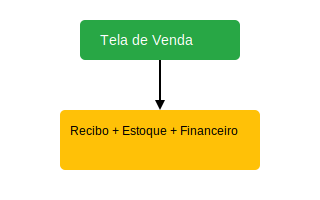
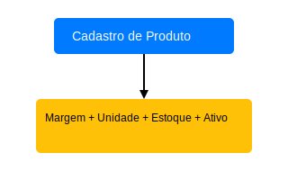
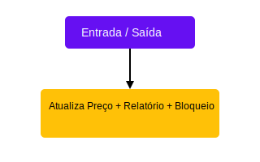
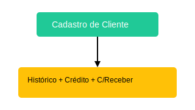
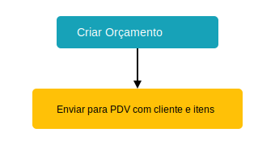
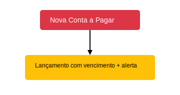
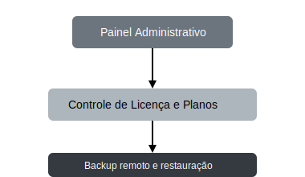
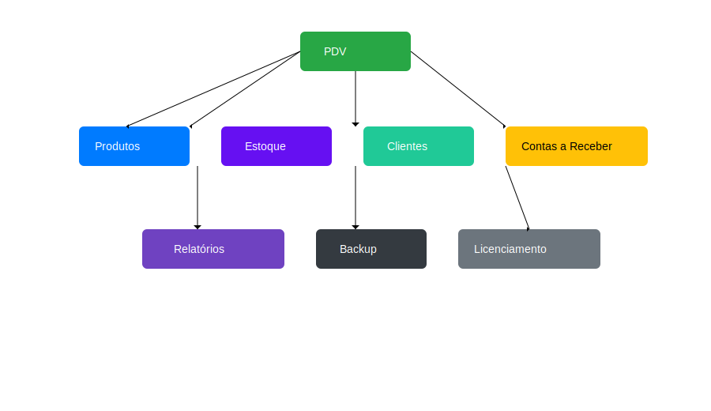
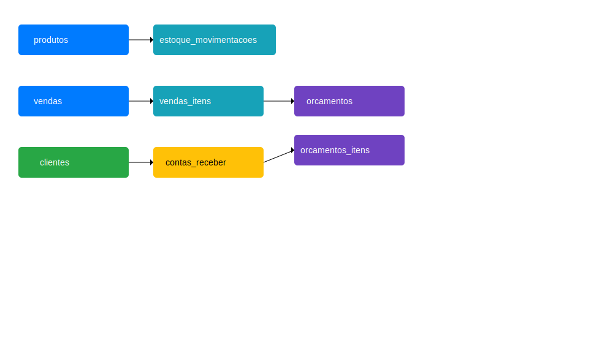

1. Introdução
LabPDV é um sistema de automação comercial com foco em vendas, estoque, gestão financeira e operações administrativas. Modular e escalável, adapta-se a pequenos e médios comércios.
- Objetivo: Automatizar e facilitar o controle de vendas e estoque.
- Stack: Python, Flet, SQLite, HTML, CSS, JS
- Licença: SaaS com controle por licença local e painel web.
2. Módulos do Sistema
PDV
Realiza vendas, controla pagamento, desconto, gera recibos e interage com estoque e financeiro.
Produtos
Gerencia itens cadastrados, margem de lucro, categoria, unidade e disponibilidade.
Estoque
Movimentações de entrada e saída, atualização de preço, relatório e controle de bloqueio de venda.
Clientes
Cadastro, limite de crédito, histórico de compras e vinculação com contas a receber.
Orçamentos
Permite gerar uma proposta sem afetar estoque ou caixa. Pode ser convertida em venda no PDV.
Contas a Pagar
Gerencia obrigações financeiras. Inclui cadastro, vencimento e controle de status (pago/pendente).
Painel Administrativo
Administra empresas, licenças, planos, backup remoto e usuários. Acesso via navegador.
Visão Geral dos Módulos
O diagrama abaixo ilustra como os principais módulos do LabPDV se interconectam entre si.
3. Banco de Dados
Estrutura relacional contendo módulos conectados via chaves estrangeiras. Veja o diagrama completo abaixo.
4. Documentação Técnica
Segue em arquivos separados em js/ e css/ com exemplos comentados. Tooltips em SVG ativados via JS para blocos com <title>.
5. Roadmap e Expansão
- Integração com NFC-e
- Sincronização entre dispositivos
- API externa e App mobile
- Controle de permissões avançadas
6. Para Desenvolvedores
Esta seção é voltada para desenvolvedores que desejam contribuir com o projeto ou entender a arquitetura técnica do sistema.
Tecnologias Utilizadas
- Frontend: Flet (Python)
- Backend/API: FastAPI (planejado)
- Banco de Dados: SQLite / PostgreSQL
- Documentação: HTML, CSS, SVG, JavaScript puro
Estrutura do Projeto
documentacao/
├── index.html
├── css/
│ └── style.css
├── js/
│ └── main.js
└── assets/
└── img/
├── *.svgFuncionalidades por Módulo
- PDV: Vendas, recibos, troco, parcelamento
- Produtos: Cadastro completo, margem de lucro, estoque mínimo
- Estoque: Entradas e saídas, atualização de preço, relatórios
- Financeiro: Contas a pagar e receber
- Painel Admin: Controle de usuários, empresas, backups e licenças
Licenciamento
O sistema funciona com ativação via painel web. Cada licença define prazo de validade, plano e limites de uso.
Planejamento de Deploy
- Execução local com banco SQLite (modo offline)
- Servidor backend e painel online (Heroku ou VPS)
- Versão futura mobile (APK) e API externa
Desenvolvido por: Lucas Castro - © 2024
7. Histórico de Versões
v1.0 - Abril 2024
- Implementação do módulo PDV (Flet)
- Cadastro e edição de produtos com margem e controle de estoque
- Entrada e saída no módulo de Estoque
- Controle visual por status de produto (ativo/inativo)
- Geração de recibo no PDV (modo local)
v1.1 - Abril 2024
- Criação da estrutura de Contas a Pagar e Receber
- Integração de vendas parceladas com contas a receber
- Inserção de bloqueio de venda sem estoque
- Relacionamentos de estoque com produtos e relatórios
- Painel de relatórios de movimentação
v1.2 - Abril 2024
- Implementação de Painel Administrativo Web (estrutura de licenças e backup)
- Sistema de ativação por licença (modo local com controle de validade)
- Integração do sistema de backup manual e remoto
- Inserção do controle de usuários, empresas e permissões básicas
- Geração de toda a documentação oficial em HTML + SVG
v1.3 - Previsto
- Emissão de NFC-e
- Integração com API externa
- App mobile com Flet (versão Android)
- Login por perfil e permissões individuais
8. README Técnico Integrado
Este é o conteúdo técnico do projeto LabPDV, integrado diretamente à documentação como referência completa para desenvolvedores e mantenedores.
Funcionalidades principais
- Interface local com Flet (desktop)
- Tema claro/escuro com paleta personalizada
- Cadastro de produtos, unidades e categorias
- Módulo PDV: vendas, descontos, parcelamento, recibo
- Cadastro de clientes e fornecedores
- Relatórios de vendas, estoque e financeiro
- Movimentações de estoque com histórico
- Controle de permissões e níveis de acesso
- Sistema de assinatura/licença (offline e via painel)
- Exportação de recibos em PDF e opção de impressão
- Notificações visuais com feedback
- Detecção automática de resolução de tela
Estrutura do Projeto
labPDV/
├── app/
│ ├── main.py
│ ├── assets/
│ ├── services/
│ ├── views/
│ ├── models/
│ └── controllers/
├── documentacao/
│ ├── index.html
│ ├── css/
│ ├── js/
│ └── assets/img/
├── requirements.txt
├── run_dev.bat
└── README.mdComo Executar
- Clonar o repositório
- Criar e ativar o ambiente virtual
- Instalar as dependências via
pip install -r requirements.txt - Executar com
flet run --reload app/main.pyou o scriptrun_dev.bat
Requisitos
- Python 3.10+
- Flet 0.27+
- Sistema Operacional: Windows
Planejamento de Deploy
- Execução local com banco SQLite
- Painel administrativo online (Heroku ou VPS)
- App mobile e API REST futura
Autor
Lucas Castro – Projeto mantido sob o selo Lab do Analista
Licença
Este projeto é privado e licenciado para uso individual conforme definido por contrato.